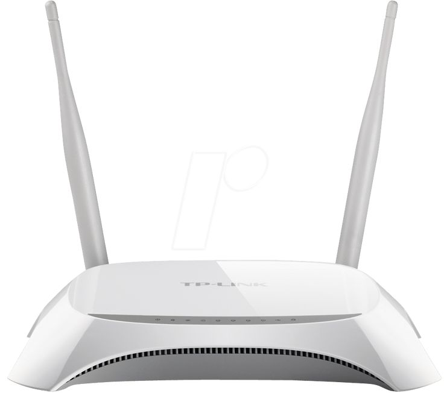

Nama Perangkat: Router

Router adalah perangkat jaringan yang meneruskan paket data antar jaringan komputer. Router melakukan fungsi penyaluran lalu lintas di Internet dengan memeriksa alamat IP dari setiap paket data dan menentukan jalur terbaik untuk mencapai tujuannya. Router memiliki dua fungsi utama, yaitu mengelola lalu lintas antar jaringan dan membagikan koneksi internet ke beberapa perangkat lain. Selain dua fungsi tersebut, ada beberapa fungsi lain yang dimilikinya, antara lain:
- Menghubungkan jaringan lokal ke koneksi DSL (digital subscriber line).
- Berfungsi sebagai firewall atau melindungi data untuk meningkatkan cyber security agar jaringan internet lebih aman.
- Mentransmisikan informasi dari ke jaringan lain, menjembatani akses internet dengan sistem kerja networking bridge.
- Memungkinkan komputer bisa saling berkomunikasi, sehingga dapat terjadi pertukaran data antar node dalam sebuah jaringan.
- Dapat membaca sumber dan tujuan alamat IP, menentukan routing dari satu node ke node lainnya dalam sebuah jaringan.
- Menyaring paket data untuk memfilterisasi paket data yang beroperasi pada suatu jaringan.
- Distribusi alamat IP ke setiap perangkat dalam jaringan tertentu.
Sumber informasi: dewaweb